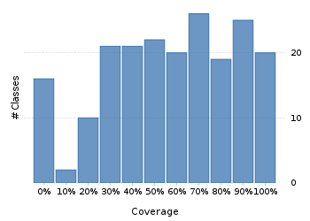
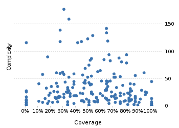

Project overview
Code coverage 228 classes, 11,422 / 21,538 elements
0.530318553%
Test results 321 / 411 tests 1.37 secs
0.781021978.1%
Code metrics
4,882
12,842
3,814
228
157
7
68,718
27,801
6,977
0.54
3.37
16.73
32.57
1.83
Class Coverage Distribution

Class Complexity

Coverage tree map
Generating Coverage Tree Map. Please wait...

Top 20 project risks
DateTimeFormatterBuilder.MatchingParser
DateTimeZoneBuilder
DateTimeZoneBuilder.OfYear
DateTimeZoneBuilder.RuleSet
ZoneInfoCompiler
DateTimeZoneBuilder.PrecalculatedZone
ZoneInfoCompiler.Rule
ZoneInfoCompiler.DateTimeOfYear
PeriodFormatterBuilder.Composite
DateTimeParserBucket.SavedState
ZoneInfoCompiler.Zone
FieldUtils
DateTimeFormatterBuilder.NumberFormatter
ImpreciseDateTimeField
PeriodFormatterBuilder.FieldFormatter
PeriodFormatterBuilder.SimpleAffix
DateTimeZoneBuilder.DSTZone
DateTimeFormatterBuilder.TextField
DateTimeFormat
DurationFieldType.StandardDurationFieldType
Most complex packages
| 1. | 0.4116982241.2% |
org.joda.time 2458 |
| 2. | 0.5110829551.1% |
org.joda.time.format 1496 |
| 3. | 0.6416256464.2% |
org.joda.time.chrono 1239 |
| 4. | 0.5615901456.2% |
org.joda.time.field 667 |
| 5. | 0.8048032580.5% |
org.joda.time.tz 535 |
Most complex classes
| 1. | 0.3090211230.9% |
LocalDateTime 179 |
| 2. | 0.3490759734.9% |
LocalDate 161 |
| 3. | 0.6412213464.1% |
DateTimeZone 144 |
| 4. | 0.277777827.8% |
DateTime 141 |
| 5. | 0.645161364.5% |
PeriodFormatterBuilder.FieldFormatter 136 |